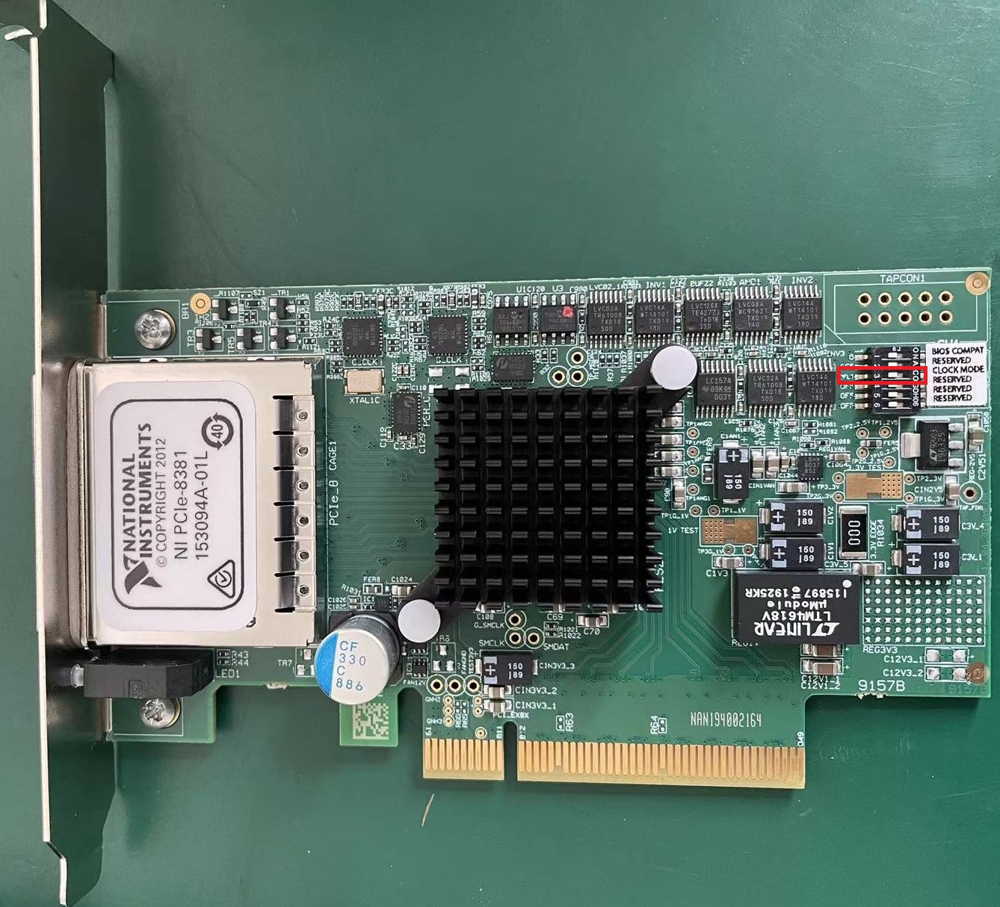

Installation of ROOT GUI Software
Installation for this software is requrired by
- CERN ROOT 6
GCC >= 4.8
FFTW3
OPENSSL
The operating system tested by this program includes CentOS7 / Scientific Linux 7 / CentOS8 / Ubuntu18.04 / Ubuntu20.04
This package uses PLX9054 driver with version 8.23. The operating systems supported by this version of the driver are CentOS 7 / CentOS 8 / Debian 08 / Debian 09 / Debian 10 / Ubuntu 18.04 / Ubuntu 20.04.
危险
Graphical interface programs and non-graphical interface programs cannot run at the same time!
Graphical interface programs and non-graphical interface programs cannot run at the same time!
Graphical interface programs and non-graphical interface programs cannot run at the same time!
The steps for Installation
Delete the old version of the PKUXIADAQ folder in your personal directory
Extract this package into your personal directory ($HOME)
Set up environment variables
Compile Plx9054 driver
Compile pixie16 driver API (this API has been modified by Hongyi Wu, driven by unofficial standards)
Compile graphical acquisition software
Compile non-graphical acquisition software
Compile online monitor program
Compile data converter program
Compile event reconstruction program (optional)
## Set up environment variables
# Add the follwing content into .bashrc file
export PLX_SDK_DIR=$HOME/PKUXIADAQ/PlxSdk
# put PKUXIADAQ.tar.gz(or PKUXIADAQ-master.tar.gz) in the personal directory /home, the position ~/
tar -zxvf PKUXIADAQ.tar.gz
or
tar -zxvf PKUXIADAQ-master.tar.gz
mv PKUXIADAQ-master PKUXIADAQ
# Acquire PKUXIADAQ directory
## Compile Plx9054 driver
# Open a new terminal
cd ~
cd PKUXIADAQ/
#Delete the undeleted driver that may exist. If there is no such directory, you do not need to execute the command.
rm -rf PlxSdk
tar -xvf PlxSdk823.tar
cd PlxSdk/PlxApi/
make clean
make
# If it succeeds,you will see Library "Library/PlxApi.a" built successfully
cd ../Samples/ApiTest/
make clean
make
#if it succeeds,you will see Application "App/ApiTest" built successfully
# If an error is reported, find the corresponding solution according to the operating system
cd ../../Driver/
./builddriver 9054
# If it succeeds,you will see Driver "Plx9054/Plx9054.ko" built sucessfully
## Compile pixie16
cd ~
cd PKUXIADAQ/GUI_ROOT/software/
make clean
make
# As long as no error is reported, the libPixie16App.a libPixie16Sys.a will be generated in the folder
# Modify settings parameters
cd ~
cd PKUXIADAQ/GUI_ROOT/parset/
# Modify cfgPixie16.txt file。
# The value after CrateID indicates the chassis number, and the value is allowed to be 0-15. If there is only a chassis, the parameter is set freely (usually the default 0 is used). If multiple chassis are running synchronously, make sure that the number of each chassis is set to a different value.
# SettingPars Following is the parameter setting file and write the parameter configuration file to be used.
# ModuleSlot The first value number indicates the number of plugins, and if there are 3 plugins, it is 3. The following numbers are for each plug-in in the slot position of the chassis (the slot position is counted from 2), and there are three plugins followed by 2 3 4 respectively.
#AutoRunModeTimes The following values are the time for automatic switching in automatic operation mode.
# Parameter ModuleSampingRate and ModuleBits only take effect in offline mode. When the main interface is initialized in Offline mode, this parameter is read.
# Modify the Run.config file, the first line in the file is the original data storage path, and the second is the file name.
# Modify the RunNumber file, the value in this file is the run number of the actual run.
## Compile graphical acquisition software
cd ~
cd PKUXIADAQ/GUI_ROOT/GUI/
make clean
make
## Compile non-graphical acquisition software
cd ~
cd PKUXIADAQ/GUI_ROOT/NOGUI/
make clean
make
## Compile online monitor program
cd ~
cd PKUXIADAQ/GUI_ROOT/OnlineStattics/
make clean
make
##编译 ROOT web monitor program（optional）
cd ~
cd PKUXIADAQ/GUI_ROOT/RealDecoder/
make clean
make
## Compile data converter program
cd ~
cd PKUXIADAQ/DecodeAndSortAll/
# Modify UserDefine.hh according to the instructions in the program.
make clean
make
## Compile event reconstruction program
cd ~
cd PKUXIADAQ/EventBuilder/
# Modify UserDefine.hh according to the instructions in the program.
make clean
make
Instruction for use
Restart the computer after booting the chassis (the computer must be open later than the chassis)
Load Plx9054 driver under ROOT permission after opening the chassis
Normal acquisition
## Load Plx9054 driver under ROOT permission
cd ~
cd PKUXIADAQ/PlxSdk/Bin/
## CENTOS
su # input ROOT password
./Plx_load 9054
## Ubuntu
## The 18th line of the file Plx_load needs to be modified: export PLX_SDK_DIR=/home/[user name]/PKUXIADAQ/PlxSdk
sudo ./Plx_load 9054
# You Will see a prompt to load successfully
## CENTOS
exit #Exit ROOT permission
## Start the graphical interface program
cd ~
cd ~/PKUXIADAQ/GUI_ROOT/GUI
./gddaq
# The graphical interface will pop up.
# You can choose Online/Offline Mode then press Boot to initialize.
# After waiting for initialization, you can modify the output data file path, file name, and run number. Press the Complete button to confirm.
# The LSRunStart button becomes operational at this time. You can start pressing Start and then press Stop for the second time.
# Online Statistics option selections mean sending online statistics
# Update Energy Monitor: Each time you select it, the energy spectrum information is read from the plug-in and sent to the online program (frequent select
## Start the non-graphical interface program
cd ~
cd ~/PKUXIADAQ/GUI_ROOT/NOGUI
./gddaq
## Start online monitor program
cd ~
cd PKUXIADAQ/GUI_ROOT/OnlineStattics/
./online
# The graphical interface will pop up.
# Press RunStart to start monitoring and update the input rate and output rate of each channel every 3 seconds. (The first time you enable the program after opening the chassis, you need to enable it after the acquisition is turned on)
# In the lower right corner of the monitoring interface, there is monitoring of the amount of hard disk usage for writing data.
# EnergyMonitor page is used to view the spectrum. Due to the internal register size limitations of the plug-in, this energy spectrum differs from the actual spectrum in channel range.
## execute data converter program
cd ~
cd PKUXIADAQ/DecodeAndSortAll/
# After the last run of acquisition, we can convert the previous run of data to ROOT format file.
./decodeandsort xxx1 [... xxx2 xxx3 ...]
#xxx indicates Run Number in different ceate
Common installation errors
Ubuntu 22.04
Not tested
Ubuntu 20.04
for file Driver/Source.Plx9000/Driver.c
// add the following 3 lines at the begining of file:
#ifndef INCLUDE_VERMAGIC
#define INCLUDE_VERMAGIC
#endif
for file Driver/Source.Plx9000/SuppFunc.c
// Line 956 is modified as follows:
down_read( ¤t->mm->mmap_lock );
// Line 969 is modified as follows:
up_read( ¤t->mm->mmap_lock );
// Comment line 402-410
// if (request_mem_region(
// pdx->PciBar[BarIndex].Properties.Physical,
// pdx->PciBar[BarIndex].Properties.Size,
// PLX_DRIVER_NAME
// ) == NULL)
// {
// return (-ENOMEM);
// }
// else
Ubuntu 18.04
The soon-to-be launched upgrade
for file Driver/Source.Plx9000/Driver.c
for file Driver/Source.Plx9000/SuppFunc.c
CentOS8
For CentOS 8, the wrong solution for installing PLX9054 driver:
// Modify Include/Plx_sysdep.h line 153
#if (LINUX_VERSION_CODE < KERNEL_VERSION(4,0,0))
CentOS7
For CentOS / scientific Linux 7.6 / 7.7, the wrong solution for installing PLX9054 driver:
./builddriver 9054
Build: Plx9054
- PLA: CentOS Linux release 7.6.1810 (Core)
- KER: 3.10.0-957.12.2.el7.x86_64
- INC: /lib/modules/3.10.0-957.12.2.el7.x86_64/build/include
- CPU: x86_64 (64-bit Little Endian)
- CMP: Gcc
- TYP: Driver
- PLX: 9054
- CFG: Release
make[1]: Entering directory '/usr/src/kernels/3.10.0-957.12.2.el7.x86_64'
arch/x86/Makefile:166: *** CONFIG_RETPOLINE=y, but not supported by the compiler. Compiler update recommended.。 Stop.
make[1]: Leaving directory '/usr/src/kernels/3.10.0-957.12.2.el7.x86_64'
make: *** [BuildDriver] Error 2
The above is the output prompt when the error occurs.
At this point, the user can modify the file /usr/src/kernels/3.10.0-957.12.2.el7.x86_64/arch/x86/Makefile to avoid this error by cancel the following code.
ifneq ($(RETPOLINE_CFLAGS),)
KBUILD_CFLAGS += $(RETPOLINE_CFLAGS) -DRETPOLINE
else
$(error CONFIG_RETPOLINE=y, but not supported by the compiler. Compiler update recommended.)
endif
9054 driver loading error
If you use NI PCIe-8381 and the driver cannot be loaded, as shown in the following figure, check whether the dial CLOCK MODE is ON.
TeamViewer
TeamViewer is an app that allows you to remotely connect to multiple workstations. There are many apps that allow remote control of different systems, but TeamViewer is set up to be extremely accessible, while also being powerful.
https://www.teamviewer.cn/cn/download/linux/